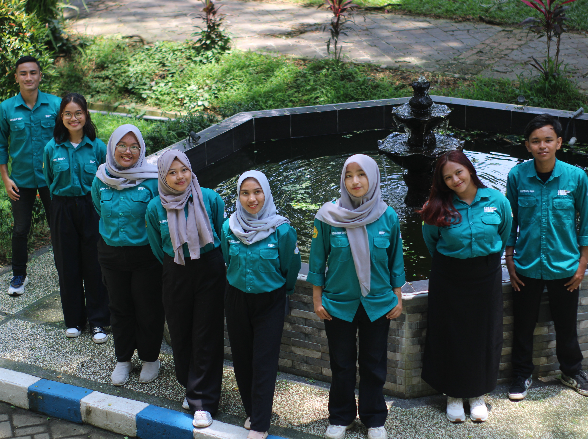
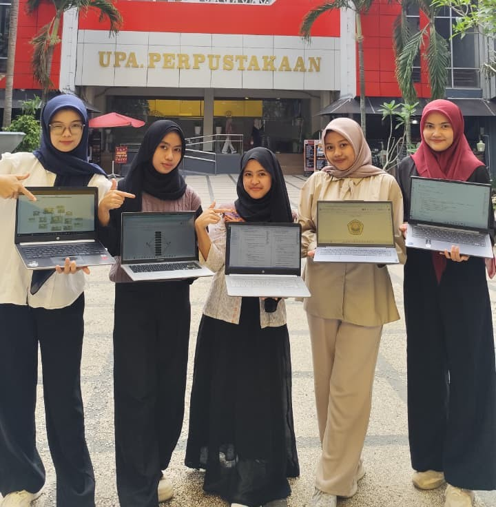
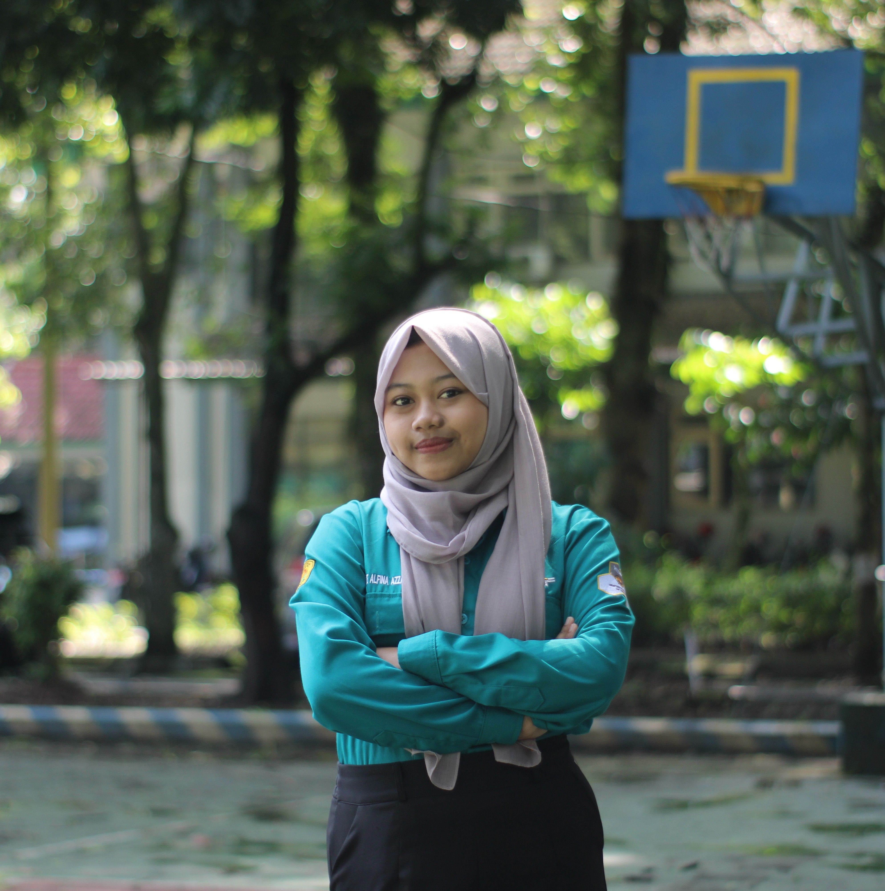
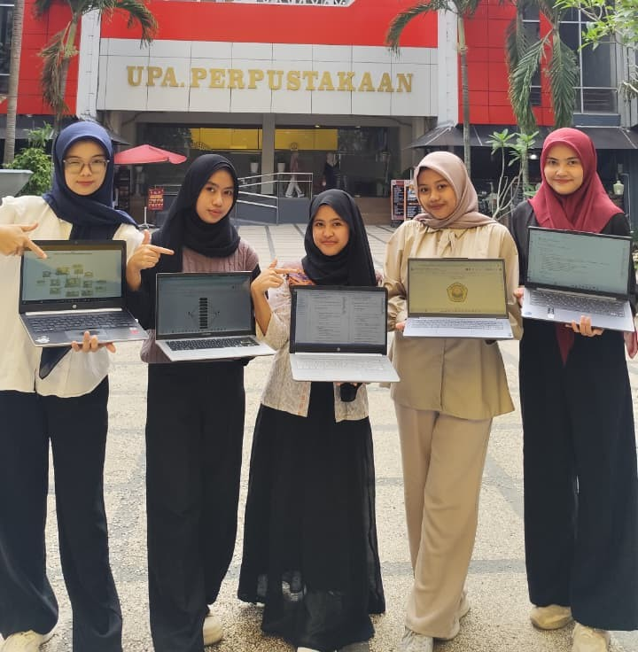
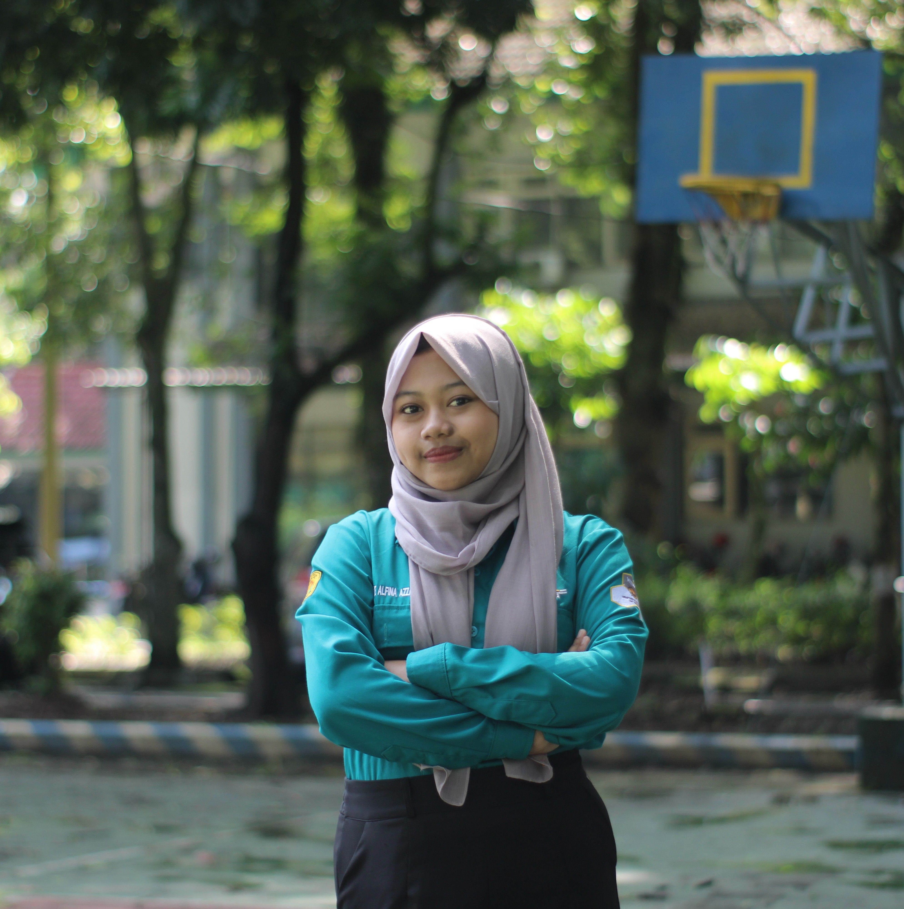
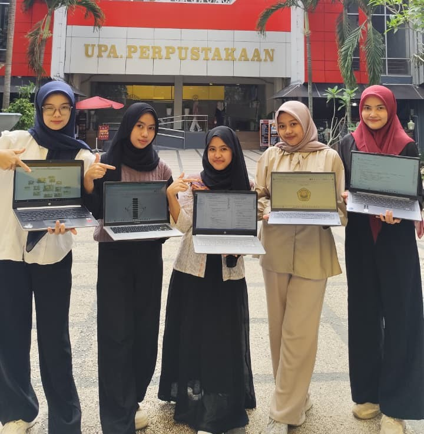
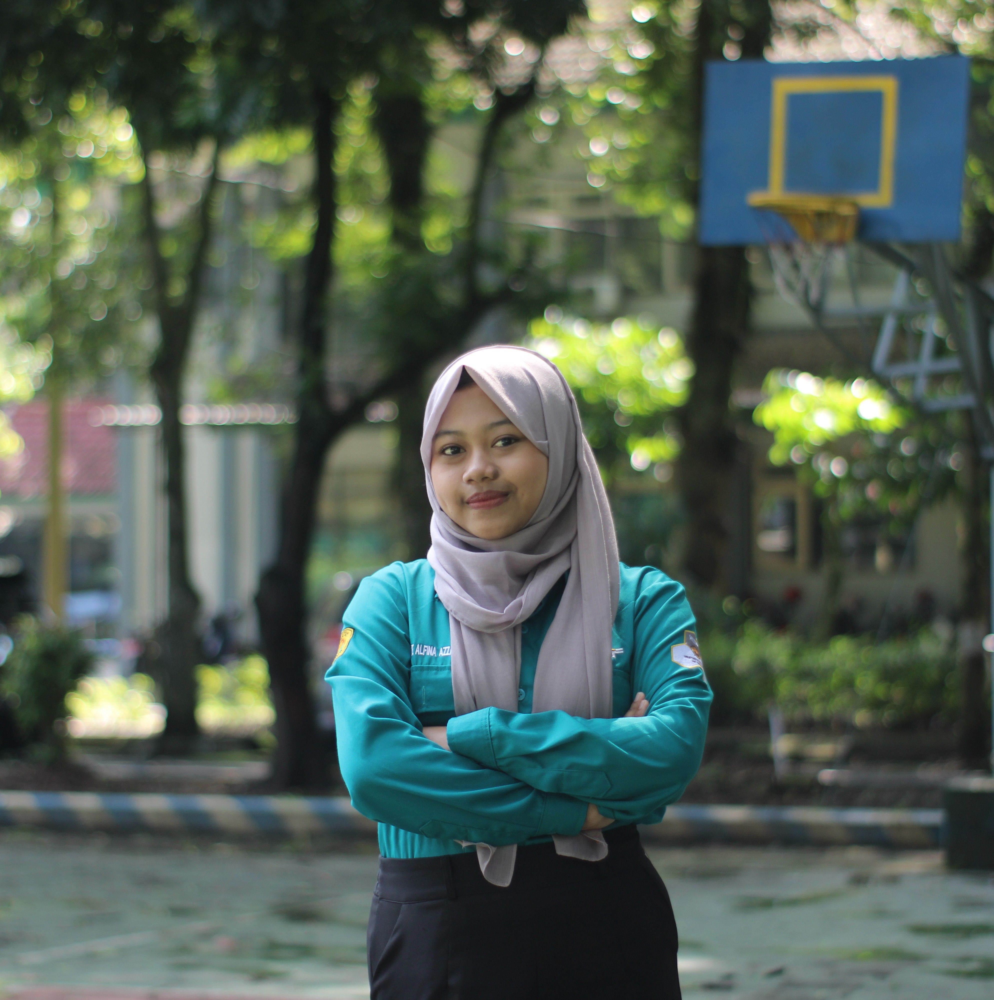

 





Know Me Better
Saya mahasiswa Informatika semester 3 di Universitas Jember dengan minat khusus pada bidang data science. Selain aktif kuliah, saya juga bergabung di Himpunan Mahasiswa Informatika sebagai staf PSDM. Saya sudah mencoba berbagai bahasa pemrograman seperti Python, C#, HTML, CSS, JavaScript, dan saat ini sedang mempelajari Go. Bagi saya, belajar teknologi adalah proses bertahap, dan saya menikmati setiap langkahnya untuk bisa berkontribusi pada pengembangan teknologi khususnya bidang data scientist di masa depan.
0
Semester
0
Bahasa Pemrograman
0
Organisasi